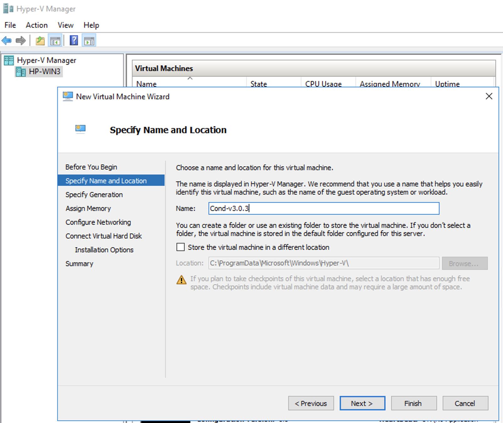
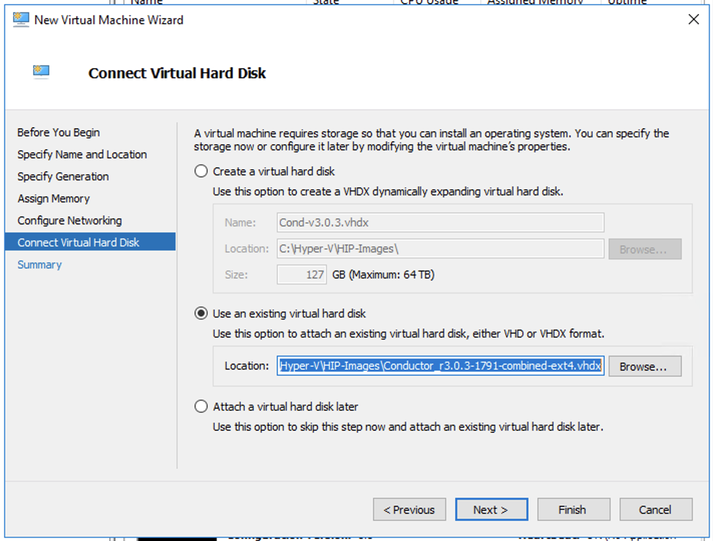
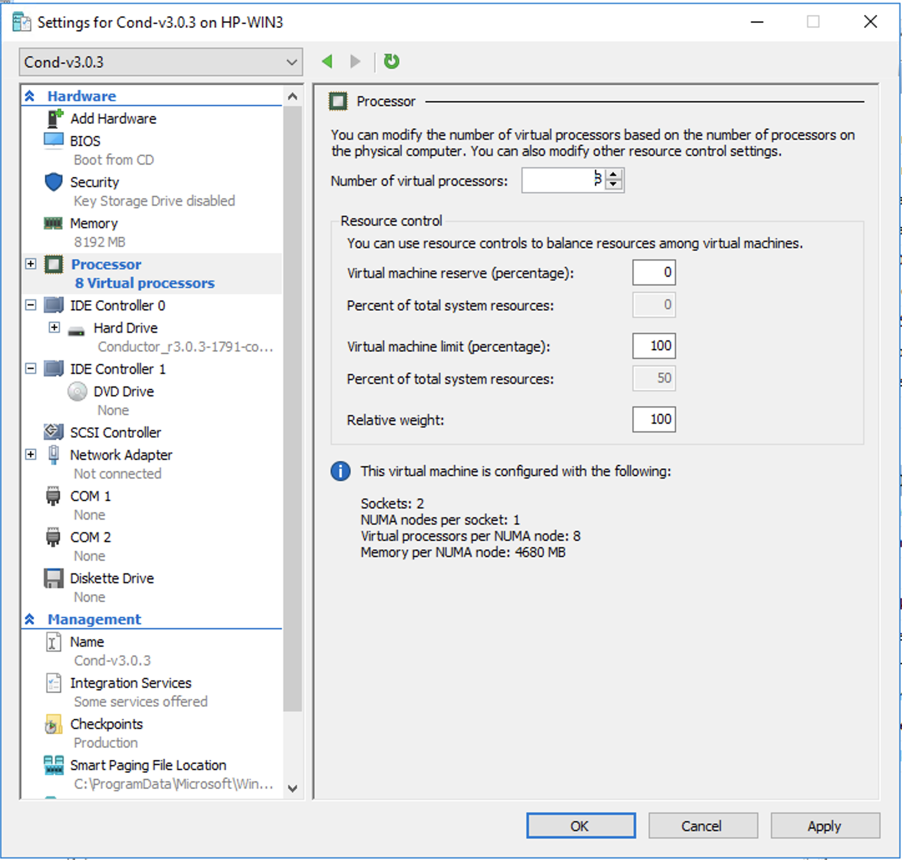
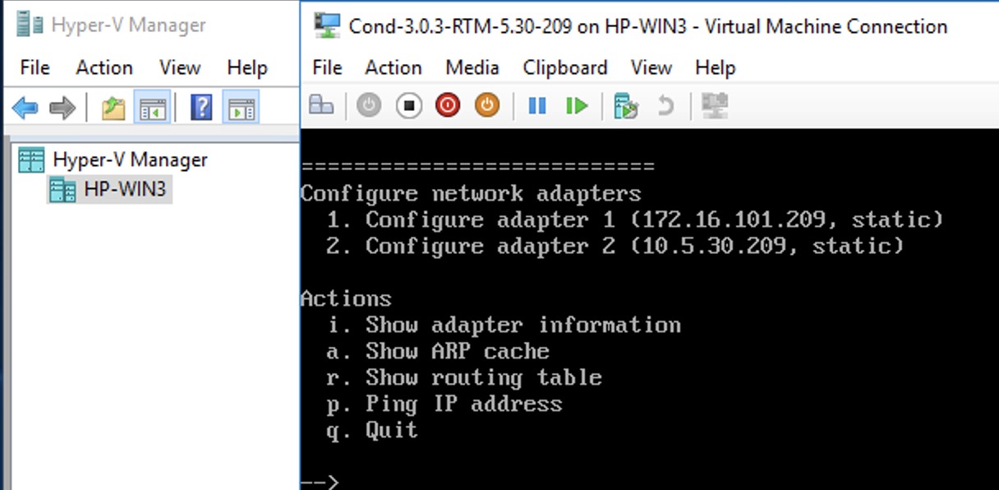

Deploy a Conductor in Microsoft Hyper-V
The virtualization server role for Windows Server 2012 R2 or 2016 is called Hyper-V Manager. The following documentation show the steps to implement and manage a secure Conductor on Hyper-V.
- An existing installation of Microsoft Hyper-V, v2012 or later.
- A Conductor virtual image (.vhdx). Request a Hyper-V Virtual Conductor .vhdx file from Customer Success.
Step 1: Create a new Conductor virtual machine
- In Hyper-V Manager, under Actions, select , and then select Next.
-
Give the Conductor a
descriptive name (for example, Cond-v3.0.3), and select
Next.

- Under Specify Generation, select Generation 1, and select Next.
-
Under Assign Memory:
- Startup Memory – Enter no less than 8192 MB. Hardware Conductors ship with 8 GB or more.
- Use Dynamic Memory for this virtual machine – Leave clear.
Select Next.
- Under Configure Networking, you will set that up later, so select Next.
-
Under Connect Virtual Hard Disk, select Use
an existing virtual hard disk and then select
Browse.

- Go to and select the Conductor*.vhdx file you downloaded, and select Open.
-
Select Next, then Finish.
Important: Do not start the virtual machine yet. You need to finish the configuration before you start it. If you already started it, you will need to delete the virtual machine and start over.
Step 2: Configure the Conductor virtual machine
- With the new virtual machine selected, on the right, select Settings.
-
Open Processor, and under Number of virtual
processors, select 8. Select Apply.

- Open IDE Controller 0. Select Hard Drive, then Add. This is a second hard drive for the data partition.
-
Configure a new Virtual hard disk for the data partition – On the
Hard Drive page, under Virtual hard
disk, select New and configure the
drive:
- Choose Disk Format – Select VHDX. Select Next.
- Choose Disk Type – Select Fixed Size. Select Next.
- Specify Name and Location – Enter a descriptive name, and keep the default location. Select Next.
- Configure Disk – Select Create a new blank virtual hard disk and for Size, enter 15 GB. Select Next.
- Summary – Check your details, and select Finish.
- Wait while Hyper-V creates the new virtual hard disk. This process can take up to 15 minutes.
- Add a second Network Adaptor – Still under the new Conductor virtual machine Settings, at the top, select Add Hardware. Select Network Adapter, and then select Add.
-
Attach Network Adapters – Now you will assign the network adapters for
your Conductor:
- Select Ok to exit the Settings page.
Step 3: Configure the Network Adapter on the Conductor Virtual Machine
- In the Hyper-V Manager, select the Conductor virtual machine.
- On the right, under Actions, select Start. It will take a few minutes for the Conductor virtual machine to initialize.
-
Select Connect, which opens a terminal window, and then
type
airshto get into Airshell. -
Type
conf networkand press Enter. If the system is still starting up, it will let you know. When it brings up the Configure network adapters menu, you can proceed. -
Type 1 or 2 and follow the menu to configure adapter 1. You may want to set the
IP to its actual address on the network. Set the following options, as
needed:
- IP address – Set to the IP for the Virtual Machine on the network.
- Netmask – Set as needed.
- Default gateway – Set as needed.
- DNS – Set to your preferred DNS server, so the Conductor can access the Tempered Licensing Server.
- Type q to quit to the main menu, then s to save your changes.
- Type q again to quit to the main Airshell screen. You may need to type reboot to restart the Conductor.
Step 4: Configure the Conductor
An unlicensed, new Hyper-V Conductor deploys with a static IP address of 192.168.56.2 on Network adapter 1.
To determine the IP address assigned to network adapter 2, at the console, log in with
name: airsh, and password: airsh, and then type
status.
Run the Conductor web
UI on either of the network adapters. To continue:
- For a v2.2.10 and later Conductors, see Log in and Configure the Conductor.
- For v2.2.8 or earlier Conductors, see License and Provision a Conductor (v2.2.8 and earlier).